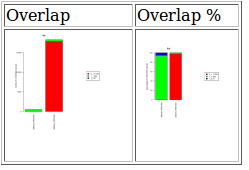
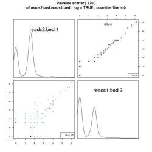
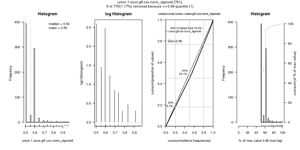

| ANALYSIS / PROBLEM |
|
TOOL |
What you need |
What you get ... |
| |
Converting a BAM-file to a BED-file:
you have a BAM-file and need a BED-file
or a paired-end BEDPE-file |
|
BED tools / BAM to BED converter |
aligned bam-file (e.g. from your queue)
! In case you want a
paired-end BEDPE-file, the BAM file should be sorted by query name! |
- 6-column BED file, or
- full 12-column "blocked" BED file, or
- paired-end, BEDPE format file |
|
A possible, recommended RNA-Seq-ANALYSIS workflow on GALAXY:
|
| |
| Prerequisites: |
| |
1. Count number of read per gene
- based on HTSeq. more
...
|
|
Elin's Tool for her RNA-Seq workflow
(recommended for RNA-Seq):
RNA-Seq / Count number of read
per gene given an annotation file and
an aligned bam file |
1. aligned bam-file with your reads (from your queue or
from your computer)
2. annotation file in gtf-format like this - make sure that the parameters "REFSEQ","exon" and "gene_id" are in the file. For changing the format of a file you can also use tools under
"GALAXY STANDARD | Text Manipulation" or
"GALAXY STANDARD | Filter and Sort"
Annotation files are also stored under the top menu Shared Data / Data Libraries / GMI, for TAIR10 you can use TAIR10_annotation.gtf. You can provide other files to be stored there - just send the file or a download-link to malgorzata.goiser@gmi.oeaw.ac.at.
|
- file in sam-format, and
- table with count-values for each case, example
(with refseq.mm9.2014_0110.imp....gtf) |
| OR: |
|
|
Count number of read per gene
more ...
|
|
HTSeq for RNA-Seq:
NGS: RNA Analysis / htseq-count |
1. sam- or bam-file (from your queue or from your computer)
2. annotation file in gff/gtf-format
|
Table with counts for each feature, followed by the special counters, which count reads that were not counted for any feature for various reasons
- counts table (tabular)
file has NO header!! - needs header if you want to use
some of the tools below; to add a header, you can use
the following tool:
RNA-Seq / Adding header to a counts-file ...
- table (tabular)
|
|
|
|
|
|
2. Adding header to a counts file
- needed for some of the tools below
|
|
RNA-Seq / Adding header to a counts-file ... |
result from counting-tool |
counting-tool result with a header |
|
|
|
|
|
3. merge ht-seq counts files
|
|
NGS: RNA Analysis / merge ht-seq counts
|
2 or more counts table results from tool htseq-count (or another counting tool) |
merged counts tables (tabular) |
| OR |
|
|
|
|
3. Merge results from several counts (see 1.)
the result from this tool can be used with several of
the tools below which need the "Metadata
(conditions)" file
more ...
|
|
RNA-Seq / Merge_V2 |
Result-Tables from the tool "htseq-count" (or from another counting-tool)
This tool requires counts-files with headers, so -
! make sure
that your files have a header!
In case your counts-files don't have a
header - you can add them with the tool
RNA-Seq / Adding header to a counts-file |
- "Header"-file:
table with header-names of your samples;
- "Data"-file:
main result i.e. table with counts of all the files
merged;
to be used with many other tools coming below;
- "Metadata"-file:
table with condition-names |
| |
| With the results of the tools
1. or 3. (Counting or Merging) you can continue your analysis by using
any of the following tools in arbitrary order |
| |
| Statistical Tests for Differences: |
| |
Differential expression using DESeq2 for exactly 2 conditions
more ...
|
|
NGS: RNA Analysis / deseq2 ... |
Result from the tool "merge ht-seq counts"
» the datasets need to have a header |
- pdf-file
- table (tabular-format) |
|
| Test for differentially expressed genes between several groups of samples (GLM ANOVA) - uses a generalized linear model to identify genes that are significantly changing in a data set consisting of more than 2 conditions. |
|
RNA-Seq / GLM ANOVA
NOT INSTALLED YET |
Results from the tool "Merge_V2" i.e.
1. "Data" (data table) and
2. "Metadata" (conditions) |
- 1 (html): example
- 2 (csv): example
- 3 (csv): example
- log file (showing errors and job description) |
|
Variance stabilizing transformation and moderated fold change calculation for counts data
more ...
|
|
RNA-Seq / VST and Moderated Fold Changes ... |
Results from the tool "Merge_V2" i.e.
1. "Data" (data table) and
2. "Metadata" (conditions)
! exactly 2 datasets and conditions
are required |
- 1 (html): example
- 2 (csv): example
- 3 (csv): example
- log file (showing errors and job description) |
|
| Investigate relationships between samples based on a set of most variable genes (Principle component analysis, PCA): |
|
|
|
|
| |
a. PCA Overview
more ...
|
|
RNA-Seq / PCA Overview ... |
Results from the tool "Merge_V2" i.e.
1. "Data" (data table) and
2. "Metadata" (conditions) |
- 1 - html: example
- 2 - RData (rdata)
- log file (showing errors and job description) |
|
|
|
|
|
b. PCA Analysis:
detailed analysis on results of a.
more ...
|
|
RNA-Seq / PCA Analysis ... |
"RData"-Result from the tool "PCA
Overview" |
- 1 - html: example
- 2 - length based (csv): example
- 3 - P1 based (csv): example
- 4 - P2 based (csv): example
- 5 - all genes included in PCS (csv): example
- log file (showing errors and job description) |
| |
| Descriptive Statistics: |
| |
All-against-all pairwise scatterplot (Matrix Scatterplot)
with boxplots for each scatterplot and histograms for each case. more ...
|
|
IMP: Data Manipulation /
Matrix Scatterplot V2 |
Table containing columns with values, a header
is required: example
accepted formats: tabular, txt, csv |
html-file with graph in jpeg and pdf
format. The pdf-file should be downloaded to be viewed. |
|
Calculate gene expression values (RPKMs & TPMs)
more ...
|
|
RNA-Seq / RPKM_TPM ... |
Result "Table" from tool "Count number of read per gene_V2" (including a header!!)
or
result "Data" from tool "Merge_V2"
and an Annotation file in gtf-format like this
- make sure that the parameters "REFSEQ", "exon" and "gene_id" are in the file.
For changing the format of a file you can also use tools under
"Text Manipulation" or
"Filter and Sort"
Annotation files are also stored under the top menu Shared Data / Data Libraries / GMI, for TAIR10 you can use TAIR10_annotation.gtf. You can provide other files to be stored there - just send the file or a download-link to malgorzata.goiser@gmi.oeaw.ac.at.
|
Table with RPKM- & TPM-Values |
| |
| |
| ANALYSIS / PROBLEM |
|
TOOL |
What you need |
What you get ... |
| |
A possible, recommended ChIP-Seq ANALYSIS workflow:
|
| |
| Peak calling: |
| |
Peak calling with MACS2
for wide peaks
more ...
|
|
NGS: Peak Calling / MACS2 callpeak ... |
1. ChIP-Seq Tag File
accepted formats: bam
2. ChIP-Seq Control File (optional)
accepted formats: bam
Effective genome size for TAIR 10: 119146348 (golden path)
TAIR10 chromosome lengths in pdf format
In case of errors try "Do not build the shifting model (--nomodel enabled)" |
- peaks (bed-file)
- html-report
- peaks (xls-file)
- peaks (encodePeak) |
|
|
|
|
|
Radar chart for MACS2 based peak parameters
This tool visualises the parameters of the output from tool "MACS2" on a so called radar chart. more ...
|
|
IMP: Peaks / Radar chart for MACS2 parameters ... |
"xls File" result from tool "MACS2" - remove rows with # in front i.e. 25 rows with tool:
Text manipulation / Remove beginning of a file |
html-file with a radarchart and boxplots
Radar chart:
|
|
Annotate peaks with the refSeq data from a genome with CEAS
more ...
|
|
NGS: Annotation / CEAS ... |
- bed file to annotate
|
- annotation pdf (report)
- annotation xls files (tab delimited) with each gene
and its relation to the peaks (distance, occupancy)
|
|
ChIP peak Annotation, Comparison and Visualization with Bioconductor package "ChIPseeker"
more ...
|
|
GMI: chip-seq / ChIPseeker
NOT INSTALLED YET |
- bed file
|
- html-file including several plots and a summary pdf-file.
Examples:
!! PDF-file with all the plots
|
|
Compare Lists
compares 2 or more lists of items (e.g. Gene Symbols) and finds all combinations of overlaps
more ...
|
|
IMP: Data Manipulation / compareLists ... |
at least 2 files
in gff, bed, txt or csv format - each file with 1 column
of items
e.g. file1
+ file2 |
- result table in csv-format
- html-file with graphical output

|
|
| |
Retrieve best peaks
calculates new peak-starts and -ends based on a certain number of bps around the summit.
more ...
|
|
GMI: Peaks / Top summits TAIR10
NOT INSTALLED YET
|
xls result-file from tool "MACS2" |
1. bed-file: example (changed to a txt-format)
2. html-file with results for top regions and for all regions in bed-, gtf- and txt-formats: example |
| |
| |
| Multiple Overlaps: |
| |
Detect multiple overlaps
of peaks
reads genomic regions from several tracks and detects overlaps between them
more ... |
|
IMP: Peaks / Multovl
|
e.g. bed file result from tool "MACS2"
or other data which you want to detect overlaps with;
accepted formats: bed, gff |
Table with overlapping regions: example in gff-format |
|
Extract ancestor track from Multovl output
more ... |
|
IMP: Data Manipulation / anctrack |
Output from tool multovl in gff-format
|
Table with gff ending, but actually in a bed-format - to use it remove the first row (Text Manipulation / Remove beginning of a file) and change the format (pencil icon): example
|
|
Detect multiple overlaps,
enhanced output
calls multovl on a set of region tracks and plots a summary. Simple
overlaps and union overlaps are reported.
more ... |
|
IMP: Data Manipulation / Multovl View |
chromosomal regions in BED format (peaks) |
HTML-File: example
|
| |
| Density-Heatmap: |
| |
1 - a) Read density over peaks/TSS
calculates read densities for all tracks over all given peaks-regions
more ... |
|
GMI: Density Heatmap / read density over peaks
NOT INSTALLED YET |
- input peak BED file
OR TSS regions annotation file from the top menu "Shared Data / Data Libraries / RNA"
- at least 2 input read BED files |
matrix in tabular format (example) |
|
|
|
|
|
1 - b) Plotting for peaks/TSS
plots various heatmaps, profiles and boxplots to visualize the results from the tool Density-Heatmap: read density over peaks
more ... |
|
GMI: Density Heatmap / plotting for peaks
NOT INSTALLED YET |
Result from DH: read density over peaks |
HTML-page with links to plotting results
|
|
2 - a) Read density over transcripts/genes
calculates read densities for all tracks over all given transcript-regions - the results are ment to be used with the tool Density-Heatmap-Plot:
plotting for transcripts
more ... |
|
GMI: Density Heatmap / read density over transcripts
NOT INSTALLED YET |
- input transcript BED file
OR genes regions annotation file from the top menu "Shared Data / Data Libraries / RNA"
- at least 2 input read BED files |
matrix in tabular format (see example above) |
|
|
|
|
|
2 - b) Plotting for transcripts/genes
plots various heatmaps, profiles and boxplots to visualize the results from the tool Density-Heatmap: read density over transcripts
more ... |
|
GMI: Density Heatmap / plotting for transcripts
NOT INSTALLED YET |
Result from DH: read density over transcripts |
HTML-page with links to plotting results
|
| |
| |
Select random lines
from a file
In order to reduce the number of lines in your dataset.
|
|
Text Manipulation / Select random lines |
any file (e.g. BAM or BED)
NOTES:
- Randomly select: number of random lines you want to extract
- If you set a random seed (any number or string, even blank "" works here) the random selection will be exactly reproduced when you use the same random seed again |
your table with reduced number of lines i.e. with the number of lines set
|
| |
|
| ANALYSIS / PROBLEM |
|
TOOL |
What you need |
What you get ... |
| |
| Graphical Visualisation |
| |
All-against-all pairwise scatterplot (Matrix Scatterplot)
with boxplots for each scatterplot and histograms for each case.
more ... |
|
IMP: Data Manipulation /
Matrix Scatterplot V2 |
Table containing columns with values, a header is required, no rownames should be included: example
accepted formats: tabular, txt, csv |
html-file with graph in jpeg and pdf format. The pdf-file should be downloaded to be viewed. |
|
Island Scatterplot
plots read counts accross read islands
more ...
|
|
IslandScatter
NOT INSTALLED YET |
2 bed-files with reads
|
html-file
when you download the data you will find many subset-files and plots not shown on the html-file


|
|
Correlation of coverage
(Spearman or Pearson)
more ...
|
|
NGS: deeptools / plotCorrelation ... |
Output Matrix file from the multiBamSummary tool:
NGS: deeptools / multiBamSummary calculates average read coverages for a list of two or more BAM files (Input here: Bam file(s)) |
- correlation matrix
- correlation plot
|
|
Plotting Genomic Regions (TSS, TES, genebody, exon, cgi)
TAIR10 Annotation is included |
|
NGS: Visualization / ngs.plot
for 1 or more samples |
1 or more bam-files |
e.g. TSS Profiles & Heatmaps - ngs.plot for 2 samples:
- TSS Profile(s)
- Heatmap(s)
|
|
| PLOTTING PROFILES with deeptools |
1. Preparing samples for calculation of a matrix:
- bamCompare normalizes and compares two BAM files to obtain the ratio, log2ratio or difference between them |
|
NGS: deeptools / bamCompare
calculates the coverage for a sample over its input/control
If you don't have an input/control file use:
NGS: deeptools / bamCoverage |
- treated sample in bam-format
- control (input) sample in bam-format
bin size (default: 50) - a mean is being calculated for each bin, the higher the value the smoother will be the curve, the higher the value the more precise will it be
How to comapre the two files:
Recommended >
"Compute log2 of the number of reads ratio"
Coverage file format:
- bigwig (binary format) - recommended to use for the following tool (computeMatrix)
- bedgraph (tabular format) - recommended for viewing and converting to bed-format
> Both formats can be used to be viewed in Genome Browsers showing the coverage of the samples |
- bigwig file or
- bedgraph file
with coverage values |
| |
2. Compute a matrix:
computeMatrix prepares data for plotting a heatmap or a profile of given regions
e.g. different variants over all TEs or over all genes |
|
NGS: deeptools / computeMatrix
prepares data for plotting a heatmap or a profile of given regions |
- Score file(s): bigwig-file(s) to be plotted (the coverage information of each sample over its input => output from bamCompare tool)
- Region(s) to plot: bed-file(s) with the coordinates of regions over which the samples shall be plotted |
- Matrix file to be used for plotting a heatmap or a profile of the given regions
[- Heatmap values (if chosen "yes" under "Show advanced output settings")]
[- sorted/filtered regions (if chosen "yes" under "Show advanced output settings")] |
| |
3a. Plot heatmap from matrix:
plotHeatmap creates a heatmap for score distributions across genomic regions |
|
NGS: deeptools / plotHeatmap
creates a heatmap for score distributions across genomic regions |
- Matrix from tool computeMatrix |
- Heatmap - example:
 |
| |
3b. Plot profile from matrix:
plotProfile creates a profile plot for score distributions across genomic regions |
|
NGS: deeptools / plotProfile
creates a profile plot for score distributions across genomic regions |
- Matrix from tool computeMatrix |
- Profile - example:
|
| |
| |
| Other useful tools |
| |
Select random lines
from a file
In order to reduce the number of lines in your dataset.
|
|
Text Manipulation / Select random lines
|
any file (e.g. BAM or BED)
NOTES:
- Randomly select: number of random lines you want to extract
- If you set a random seed (any number or string, even blank "" works here) the random selection will be exactly reproduced when you use the same random seed again |
your table with reduced number of lines i.e. with the number of lines set
|
| |